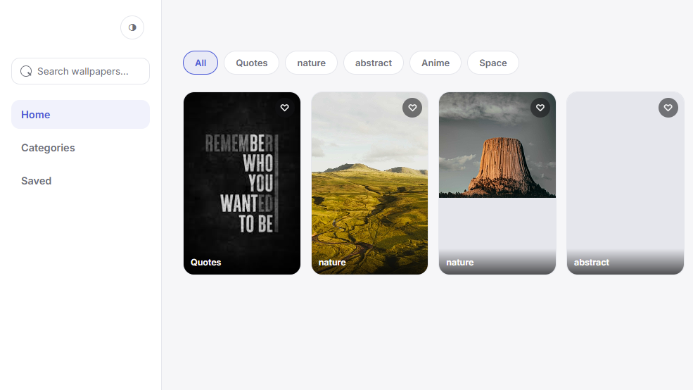

The problem
Wallpaper apps normally need a server and a database just to serve images and a catalog — cost and maintenance for something that barely changes.
What I built
A mobile app and a zero-dependency web client, both driven by a single static catalog hosted on GitHub. Drop images into a folder, push, and the catalog regenerates itself. It includes auto light/dark theming, favorites and pinch-zoom.
How I built it
A Flutter app and a zero-dependency JavaScript web client, both reading a single static JSON index hosted on GitHub and served through jsDelivr, regenerated by a GitHub Action on every push.
Key decisions
- Used static hosting as the backend — zero infrastructure to run, secure or pay for.
- Kept one shared catalog contract so the mobile app and the web client stay in sync from a single source of truth.
Result
Built as both a web app and a Flutter build, with the catalog kept current automatically by CI instead of by hand.